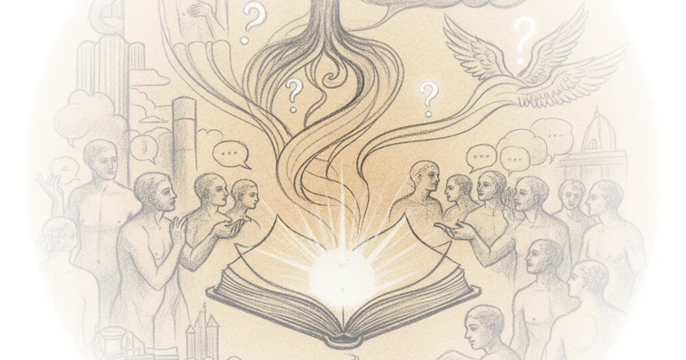

In a landscape where religious education often defaults to recitation and rote memorization, Wayfare issues a radical, time-sensitive directive: cut the lesson in half to double the intellectual engagement. As the executive branch of this faith community prepares to compress second-hour church lessons into twenty-five-minute increments starting in September 2026, the editors argue that this constraint is not a deficit but a catalyst for a specific pedagogical shift. The piece suggests that true spiritual literacy requires the "dignity of standing in uncertainty," a concept that demands we stop teaching answers and start teaching questions.
The Architecture of Uncertainty
Wayfare reports that the new standard requires teachers to "model how inspiring, open-ended questions invite the class to interpret scripture." This is a significant departure from the traditional Sunday School dynamic, which the editors bluntly critique as producing "fewer 'Sunday School answers' in Sunday School, Relief Society, and elders quorum." The argument here is that the pressure of a shortened timeframe forces a move away from the "hermeneutics of suspicion"—where texts are dissected for hidden, often cynical meanings—toward a Socratic engagement where the text itself becomes the primary authority, not the teacher's pre-packaged conclusion.

The piece outlines a rigid, almost cinematic structure for the twenty-five-minute window: four minutes for introduction, four for setting the scene, and a mere minute to launch the discussion. "Paint the story like a cinematographer, starting at the height of action and then cutting away before resolution," the editors advise. This instruction to "leave the listeners hanging" is a bold move. It relies on the psychological principle that unresolved narratives drive engagement more effectively than neat summaries. By refusing to provide the resolution, the teacher hands the cognitive load back to the students.
"Teaching succeeds when it models and invites class participants to use scripture to raise and address questions to which they do not already know the answer."
This approach mirrors the artistic tension found in Mannerist works like the "Circle of Pontormo, A Discussion" (mid-1520s), referenced in the piece's header. Just as Mannerism rejected the balanced clarity of the High Renaissance in favor of elongated forms and ambiguous spaces, this lesson plan rejects the "balanced" clarity of a finished sermon in favor of the "gap" where the class must fill in the meaning. The editors note that the whiteboard should visually represent this: a top section for big-picture questions, a bottom section for text specifics, and a "literal middle space or gap for the class to fill in between." This spatial metaphor is powerful; it treats the classroom not as a place of transmission, but as a construction site for meaning.
The Mechanics of the Gap
The operational details of the plan are surprisingly granular. Wayfare suggests that teachers identify "three passages that are short yet dense in substance"—described as "pivot points in the narrative, surprising phrases, or other curiosities." For those struggling to find these, the piece points to Professor James W. Faulconer's The Scriptures Made Harder series. This recommendation is crucial; it acknowledges that deep textual analysis is not intuitive and requires external scaffolding. The editors argue that scaling these prompts to class size ensures "each class member has the opportunity to interpret scripture," a democratic impulse that counters the tendency for a few vocal members to dominate the conversation.
The timeline is unforgiving. After a five-minute internal group discussion, the class moves to reporting. Here, the teacher's role shifts from lecturer to editor. "The teacher repeats each group's report in a way that raises a new question or repeats its main principle," the piece advises. This technique prevents the discussion from becoming a series of isolated monologues. Instead, it forces a synthesis, where the teacher "reclaims the best part of it" and connects it to the broader theme.
"Silence is strength (especially when class feels rushed). Use it deliberately. Even a single second of silence can make some class participants nervous; use that to serve them."
The editors' insistence on "wait time" is perhaps the most counter-cultural advice in the piece. In a twenty-five-minute slot, every second feels precious, yet the article argues that "waiting to speak at least five seconds after asking a question... encourages deeper responses." They suggest asking a question, waiting ten seconds, rephrasing, and waiting again. This is a high-stakes gamble for a teacher; it risks the silence becoming awkward or the clock running out. However, the payoff is a classroom where participants are thinking rather than reacting. A counterargument worth considering is whether this level of cognitive demand is sustainable for all age groups, particularly youth or those new to the faith, who might feel alienated by the lack of immediate answers. Yet, the piece insists that "almost all classes will participate" if the teacher holds the space.
The Courage to Pause
The final section of the plan focuses on transitions and the emotional management of the class. The editors provide specific phrases to model courage and curiosity, such as, "That's a good place to pause, not because we're done but because we are not." This framing is essential for a system that is intentionally leaving questions unanswered week-to-week. It transforms the interruption of the bell or the end of the lesson from a failure of time management into a deliberate pedagogical choice: "Let's hold that tension until next week. It's healthy and good to think."
The piece concludes by acknowledging that this method requires a shift in the teacher's identity. They are no longer the source of truth but the facilitator of inquiry. "Excellent teaching leads to fewer 'Sunday School answers'... it deepens literacy, the dignity of standing in uncertainty, and testimony." This redefinition of testimony is striking. It moves the concept from a declarative statement of belief to an experiential process of wrestling with the text.
"We can bring this discussion into the bridging question next week... That's a good place to pause, not because we're done but because we are not."
Critics might argue that this approach places an undue burden on teachers to be masters of improvisation and textual analysis, potentially widening the gap between well-resourced and under-resourced congregations. However, the editors seem to believe that the structure itself—the whiteboard, the specific timing, the reliance on Faulconer's questions—provides the necessary guardrails to make this accessible.
Bottom Line
Wayfare's argument is a compelling case for the power of constraint: by shrinking the time available, the piece forces a expansion of depth. Its strongest asset is the reframing of the "gap" between text and question as the primary site of learning, a move that aligns with the most rigorous traditions of philosophical inquiry. The biggest vulnerability lies in execution; without the discipline to hold the silence and the courage to leave the story unresolved, the twenty-five-minute format could easily devolve into a rushed, superficial skimming of the text. The reader should watch for how this "bridging question" model holds up when applied to complex, controversial texts where the "gap" might be too wide for a small group to bridge in a single week.